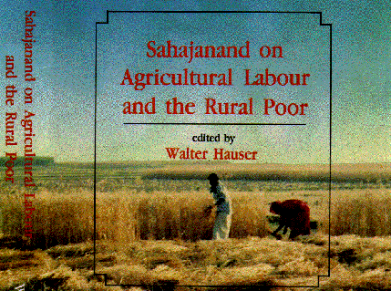

AUTHOR: Sahajananda Sarasvati, Swami, 1889-1950. | Ed. Hauser, Walter, 1927-
TITLE: Sahajanand on agricultural labour and the rural poor : an edited
translation of Khet mazdoor / with the original Hindi text and an
introduction, notes, and glossary by Walter Hauser.
OTHER TITLE: Kheta-majadura. English & Hindi | Agricultural
labour and the rural poor.
PUBLISHED: New Delhi : Manohar Publishers and Distributors, 1994.
DESCRIPTION: xviii, 239 p. : ill. ; 23 cm. Includes index.
SUBJECT TERMS: Agricultural laborers--India. | Rural poor--India. |
Trade-unions--Agricultural laborers--India.
ISBN: 8173040605
CALL NUMBER: HD 1537 .I4 S23813 1994
Return to Hauser "Peasant Surprise" May 1996
OR to Sahajanand page OR to the
Peasant
Symposium May 1997 OR
Swami
and Friends by Arvind N. Das